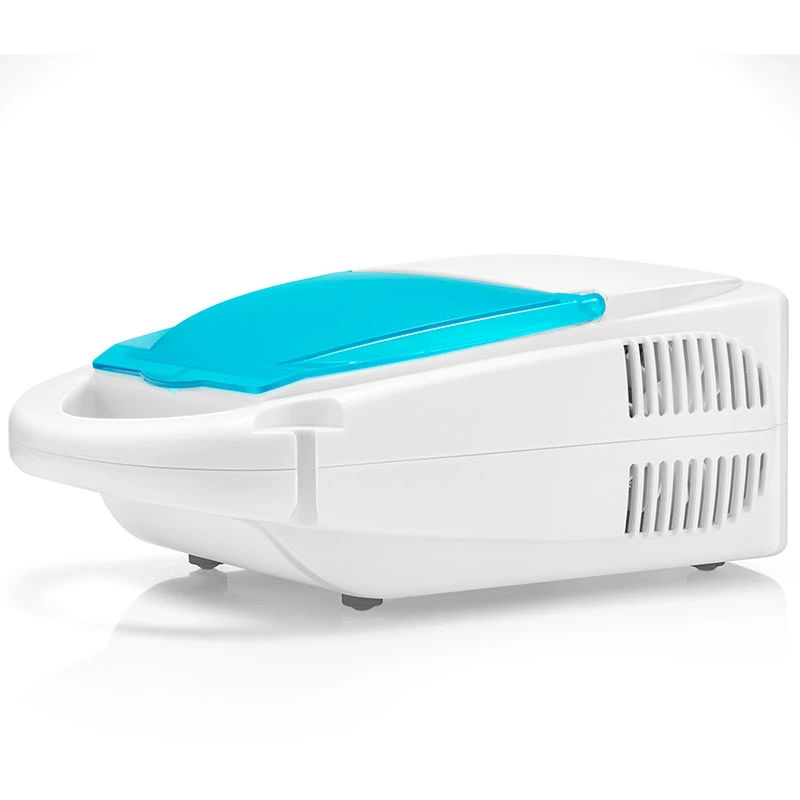

Informações sobre Asma
A asma é um problema respiratório que pode ser controlado com cuidados especiais.
Como Prevenir a Asma:
- Mantenha um peso saudável.
- Evite fumar e estar perto de fumaça de cigarro.
- Faça exercícios regularmente, com orientação adequada.
- Mantenha o ambiente limpo e bem ventilado para reduzir poeira e odores.
- Evite o contato com substâncias que desencadeiam crises.
- Use capas antiácaros nos colchões e travesseiros para minimizar alérgenos.
- Visite as vezes ao no HRU .
Alimentos que Devem ser Evitados:
- Amendoim e frutos do mar, que podem causar alergias.
- Alimentos processados e ricos em conservantes, como salgadinhos, embutidos (salsicha), refeições prontas congeladas e refrigerantes.
- Bebidas alcoólicas e refrigerantes.
- Alimentos com alto teor de gordura.
- Alimentos picantes e condimentados.
Alimentos Recomendados:
A dieta de alimentos que são benéficos para quem sofre de asma:
- Frutas frescas como manga, maçã, banana e abacate.
- Verduras e legumes como espinafre, abóbora e quiabo.
- Grãos integrais como milho e arroz.
- Peixes frescos ricos em ômega-3, como o peixe-pende e carapau.

Máquina de Salbutamol
Essa máquina ajuda a usar remédios como o salbutamol para crises de asma.